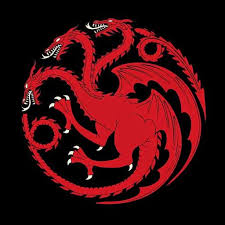
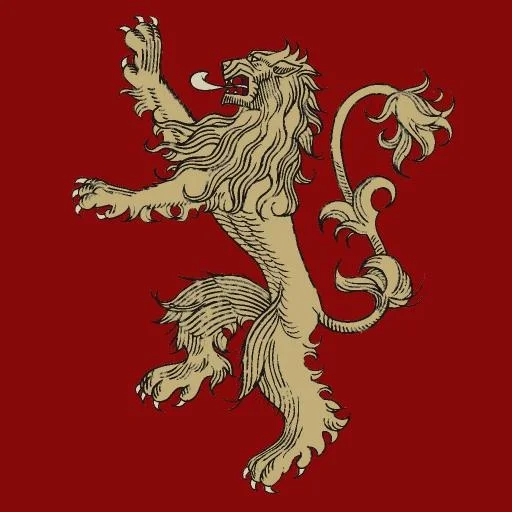
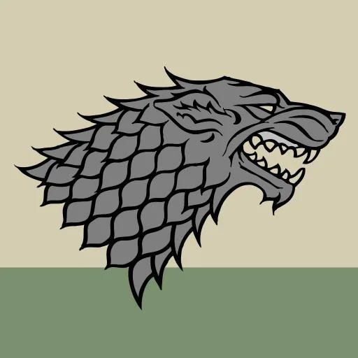
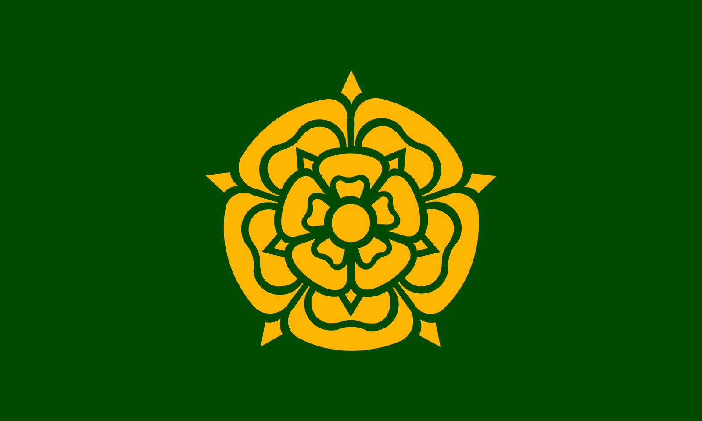
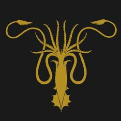
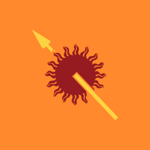

A Targaryen ház híres sárkányairól és tűz iránti ellenállásáról. Évszázadokon át uralkodtak Westerosban, amíg le nem taszították őket a trónról. 
A Lannister ház gazdag és befolyásos, mottójuk: "Hallgasd meg üvöltésem!". Tagjai ravaszak és politikailag aktívak, gyakran a Királyvárban. 
A Stark ház Észak urai, híresek becsületükről és hűségükről. Mottójuk: "Közeleg a tél". A család székhelye Winterfell. 
A Baratheon ház a Viharvég urai, jelképük az agancsos szarvas. Mottójuk: "A mi haragunk." Tagjai híresek harciasságukról és büszkeségükről.
A Tyrell ház a Virágosvölgy urai, jelképük az arany rózsa. Mottójuk: "Növünk erősebben." Gazdagok, befolyásosak és híresek vendégszeretetükről. 
A Greyjoy ház a Vas-szigetek urai, jelképük az arany kraken. Mottójuk: "Mi nem vetünk." Híresek kalóz életmódjukról és függetlenségükről. 
Az Arryn ház a Sasfészek urai, jelképük a kék mezőn fehér sólyom és hold. Mottójuk: "Magasan, mint a becsület." Híresek büszkeségükről és elszigeteltségükről.

A Martell ház Dorne urai, jelképük a vörös nap arany lándzsával. Mottójuk: "Hajolj, ne térj meg, ne törj meg." Híresek függetlenségükről és büszkeségükről. 
A Tully ház a Folyóvidék urai, jelképük az ugró pisztráng. Mottójuk: "Család, kötelesség, becsület." Híresek családi összetartásukról.

Persze még rengeteg ház van, de azok nem játszanak akkor szerepet mint ezek.